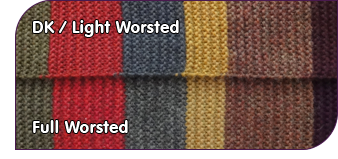
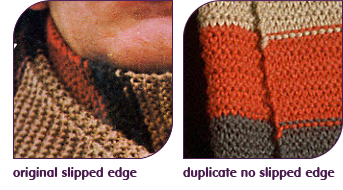
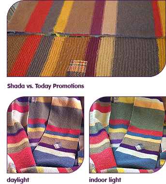
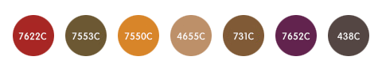
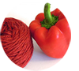
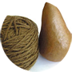
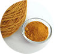
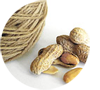
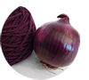
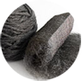

ORIGINAL SCARF
THE ORIGINAL(ACHESON HERO) PATTERNS

The original scarf was probably somewhat light DK wool and wool blends, but sport, DK and light worsted will work fine. There is no reason to alter the pattern unless you knit rather loosely or quite tightly.
Choose the worsted or the aran pattern for heavier yarn. These are calculated to the most common gauges suggested on the labels of manufacturers. Fuller worsted hardly looks any different at around 84 percent the row count, but I don't recommend aran weight. The scarf will lack drape and look more like one of your gran's afghans than a professional garment, but it will do if you need a scarf in a hurry.
The original scarf measured approximately 12 feet (blocked, not including tassels) for its screen debut. Despite the loss of a grey stripe, it continued to stretch to something around 14 feet for its tenure in Season 12. It must have been around 6 stitches per inch wide and 8 rows per inch long. DK on a US #5 produces this gauge exactly for me, but I won't recommend a specific needle size. You will find knitting and blocking a swatch in your choice of yarn the best way to determine the right needle size as both your tension on the yarn and the needle size determine the gauge. Take a little time to experiment.
For convenience, the second page of the patterns includes garter ridge counts. A garter ridge is simply two rows, but they are much easier to count as you're knitting.
THE STUNT DUPLICATE
A stunt/duplicate version of the scarf was also created that was later used as the primary scarf and ultimately became half of the super-long scarf starting in Season 16. It is ostensibly smaller than the original and has some subtle differences in the pattern. It's narrower at only 60 stitches. For the most authentic replica of this particular scarf, I recommend switching to smaller needles to make a smaller finished size. The colors are very slightly different, though this could be due to differing amounts of wear and fading compared to the original. As it is today, the purple and gold are a tad brighter and more saturated, the brown is a tad lighter, the tan is less saturated, and the red is a wee bit darker. A color guide might be added later.

KNITTING TECHNIQUES
BLOCKING
More about this will be added to the knitting tips section, but for now a little advice. You might be finished knitting only to find that your scarf is much shorter than you imagined. Don't panic! Pure wool will stretch 40 to 50 percent with the wet blocking technique. When knitting the original scarf (Season 12.5), I end up with a strip measuring 11-12 inches wide and about 8 feet long. After blocking, it measures 10-11 inches wide and about 12 feet long, which is right on target for that version, which will stretch even more with wear. See this photo for an example of what you might get.

Blocking will make your replica much more authentic looking. The original and duplicate/stunt version of the scarf might not have been intentionally blocked, but they were definitely wetted and stretched (more like mishandled and stretched to their limits if the pronounced ribbing is anything to go by).
TASSELS
The number of tassels changed as the scarf was damaged and repaired, but it started out with 12 (proven by a photo at last!). By Season 13, the now gold end of the scarf still had 12 tassels, but I haven't quite nailed down the number for Season 14. The stunt duplicate has 11 tassels. Tassel instructions are planned to be added to the knitting tips section.
TO SLIP OR NOT TO SLIP?
The original scarf definitely has a slipped stitch edge. Don't let anyone tell you otherwise. The duplicate/stunt version of the Season 13 scarf does not. It's a little difficult to discern the edge of the original in the small publicity photo at right, but the lack of slipped stitches on the back of the duplicate scarf is easy to spot as diagonal loops over the edge where the rows change color.
I prefer to slip the last stitch of each row knit-wise as it neatens the edge and can help hide color joins.

COLORS (10/28/2018)
Pantone colors and yarn swatches were evaluated directly against the Shada scarf to make these color selections. The colors presented do not to significantly vary from the Shada scarf in its present state and do not make the subtle distinctions between the original and stunt portions (possibly something to do later). I do not believe that it has enough wear or fading to really be concerned about. The intensity of new yarn is generally enough of a fix. This choice is reinforced by a comparison to the Today Promotions scarves, the reference for which is believed to have been the actual stunt duplicate. Those scarves are wool blend and still match the real thing very closely, which suggests that the Shada scarf is fairly stable despite its history of wear.
Keep in mind that print and fiber are quite different. Matching to coated Pantone chips is probably better due to the reflectivity and depth of color that yarn exhibits. Color matching will never be exact even with guidance, and it's virtually impossible to match how the scarf appeared in the 1970s. You might find these colors dark - especially the tan. Studio lighting and video recording often made the scarf seem lighter than it is. The hues in photographs also tend to wander. Perhaps the trickiest color is the grey. If often appears bluish in photographs, but it is a very warm grey bordering on a deep taupe with a hint of purple. See the example of the Shada scarf today as it appears with some sunlight and in typical artificial light. Quite a difference isn't it?

These free Behr paint chips found in hardware stores also make a pretty good guide. Compared to Pantone, they will all be a little light (except the grey).
|
red green gold tan brown purple grey |
PPU2-16 Fire Cracker N300-7 Mayan Ruins M260-7 Back to School S240-5 Poncho S210-7 October Leaves S120-7 Fine Wine N530-7 Private Black |
You can always compare yarn to commonly found red bell pepper (to be replaced with a better example soon), Bosc pear, turmeric, roasted peanuts, tarnished copper coins, red onion and steel wool. Vegetables and coins will vary, but these will put you in the right direction. Click to enlarge.
     


YARN RECOMMENDATIONS
100% WOOL RECOMMENDATIONS
Both single brand profiles and compatible combinations are presented here. They have been tested for reliable gauge and blocking. Recently manufactured lots from each brand are occasionally checked to ensure that colors and quality are the same. Unfortunately, colors eventually get discontinued.
Manufacturers often seem to arbitrarily label the gauge of their yarn. They are not to be trusted. The reality is that there are many incremental gauges to say the least of the differing textures and number of plies. This creates further headaches for those of us who like to mix brands, but the updated suggestions are refined to categories for easier compatibility. Some yarn choices appear in more than one category. There is a little wiggle room in the gauge of these, but you should not experience any radical differences.
DK/Sport Combo (10/30/2020)
The resulting fabric with DK weight has excellent drape. Jamieson's is relatively expensive, and color subs are required. Stick to the original or duplicate pattern for these. Though technically sport weight, Knit Picks gauges the same as the others in this combo.
|
red 1 red 2 green gold 1 gold 2 tan brown purple 1 purple 2 |
Jamieson's Shetland DK Jamieson's Shetland DK Jamieson's Shetland DK Knit Picks Wool of the Andes Sport Jamieson's Shetland DK Jamieson's Shetland DK Jamieson's Shetland DK Rauma 3-ply Strikkegarn Knit Picks Wool of the Andes Sport |
462 Ginger (brighter) 578 Rust (darker for Stunt Dupe) 429 Old Gold (vivid but fine) 25654 Turmeric 425 Mustard 337 Oatmeal 1190 Burnt Umber (old lots too orange) 141 Red Violet 25662 Currant (too red, a bit earthy) |
Light Worsted Combo (10/30/2020)
These choices are very much light worsted - nearly DK weight. Note that Cascade 220 Superwash pills and felts a bit, but this failure makes it compatible with the plain wool in this combo. Stick to the original pattern for this combination.
|
red green 1 green 2 gold tan 1 tan 2 brown purple grey 1 grey 2 |
Cascade 220 Superwash Universal Deluxe Worsted Universal Deluxe Worsted Universal Deluxe Worsted Universal Deluxe Worsted Cascade 220 Superwash Knit Picks Wool of the Andes Cascade 220 Superwash Universal Deluxe Worsted Cascade 220 Superwash |
823 Burnt Orange 12181 Bronze Brown 818 Mocha (too brown) 12182 Gold Spice 41138 Brown Sugar (very slightly brownish) 1961 Camel (a bit dark) 23893 Amber Heather 880 Marionberry (beware bluer lots) 12172 Dark Crystal 816 Gray (neutral) |
Worsted Wool (10/30/2020)
The color selection is pretty low, but these are largely compatible with light worsted so long as you're prepared to block with care. These will work for the original pattern, but the result could be thick. Better drape will result from using the worsted pattern.
|
red green gold tan 1 tan 2 brown purple grey |
Berroco Ultra Wool Knit Picks Wool of the Andes Cascade 220 Cascade 220 Knit Picks Wool of the Andes Knit Picks Wool of the Andes Cascade 220 Knit Picks Wool of the Andes |
3327 Kabocha 24066 Thyme (not spot on but good) 2415 Sunflower (a bit dull, low contrast with tan) 8622 Camel 25072 Almond (a bit light but perfect hue) 23893 Amber Heather 9572 Cabernet 25073 Bramble Heather (heathered) |
ACRYLIC RECOMMENDATIONS
Low cost and easy care can be had with acrylic, but not in a single brand.>
DK (10/30/2020)
This is as good as it gets in acrylic using the original pattern. Many of these options have UK-friendly shipping options. Note that the sport weight and DK yarns in this combo gauge the same in spite of their labels. It's all very compatible.
|
red 1 green 1 green 2 gold 1 gold 2 gold 3 tan 1 tan 2 brown 1 brown 2 purple 1 purple 2 purple 3 grey 1 grey 2 |
Stylecraft Special DK Lion Brand Basic Stitch Sirdar Hayfield Bonus DK Stylecraft Special DK Sirdar Hayfield Bonus DK Kartopu Gonca Knit Picks Brava Sport Stylecraft Special DK Knit Picks Brava Sport Kartopu Gonca Kartopu Gonca Knit Picks Brava Sport Stylecraft Special DK Kartopu Gonca Stylecraft Special DK |
1029 Copper (too rust) 132 Olive (not spot on but good) 792 Moss Green (too green) 1790 Gold 01613 Pumpkin K1319 Honey 26371 Almond (a bit light but perfect hue) 1420 Camel (a bit golden and saturated) 26376 Brindle K882 Brown K729 Purple 26378 Currant (too red, a bit earthy) Plum 1061 (a bit light) K902 Smoke Grey (a little light) 1063 Graphite (neutral, a little light) |
Worsted (10/30/2020)
If you knit tightly and are skilled at steam-blocking, these will work with the original pattern, but the result will be thicker and could lack drape. There is some wiggle room in the yarn weight so you might mix these with the DK options above, but again, steam-blocking will be required. There is no worsted green or gold at this time.
|
red 1 red 2 tan 1 tan 2 brown 1 brown 2 purple 1 purple 2 grey 1 grey 2 |
Knit Picks Brava Worsted Lion Brand Vanna's Choice Bernat Satin Red Heart Soft Yarn Red Heart Soft Yarn Knit Picks Brava Worsted Red Heart Soft Yarn Knit Picks Brava Worsted Lion Brand Vanna's Choice Red Heart Soft Yarn |
25719 Paprika 133 Brick 04011 Sable 9388 Wheat (a bit light) 1882 Toast 25721 Brindle 3729 Grape 25720 Currant (too red, a bit earthy) 125 Taupe (it's warm grey, a little thick) 9010 Charcoal (neutral to cool) |